TRAIN 0
The large blue and white building that goes around the huge parking lot with the The Gym, Nike Factory Store and The Food Warehouse.
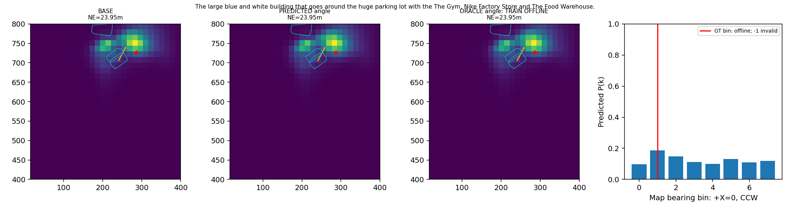
Oracle仅TRAIN离线，不是导航SR。地图轴未核实地理北；橙色箭头定长40m仅为显示。
中文报告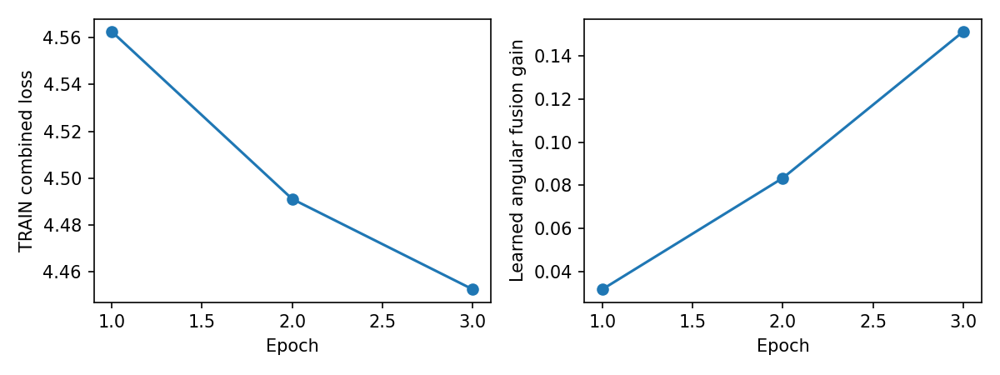
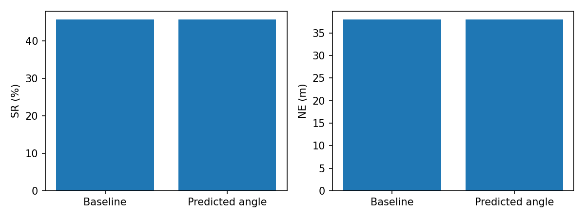
The large blue and white building that goes around the huge parking lot with the The Gym, Nike Factory Store and The Food Warehouse.

A black car parked in the first parking lot on the left of Wellington Road from Willmore Road. It is parked between a red car with a balc kroof and a light gray car with a black roof, just past the gate.
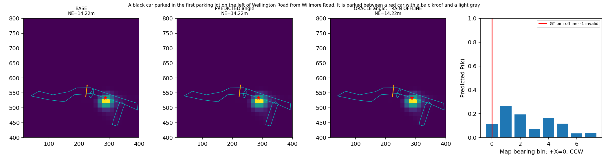
The black car that is 7th from the right in the 12th row of cars in the large parking lot behind the One Stop Building, when viewed aerially with the long side of the One Stop Building to the right.
The fifth black car in the third aisle of the Nike Factory Store parking lot. It's between two black cars.
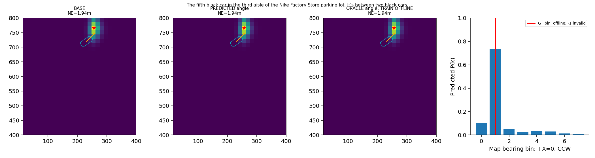
The gray car that is 5th from the right in the 6th row of cars in the large parking lot behind the One Stop Building, when viewed aerially with the long side of the One Stop Building to the right.
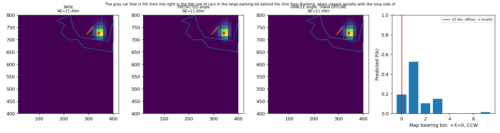
The tan car that is 7th from the right in the 10th row of cars in the large parking lot behind the One Stop Building, when viewed aerially with the long side of the One Stop Building to the right.
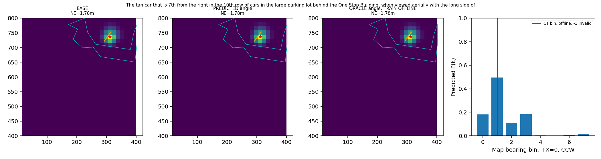
The light gray car that is 11th from the right in the 3rd row of cars in the parking lot behind the One Stop Building, when viewed aerially with the long side of the One Stop building to the right.
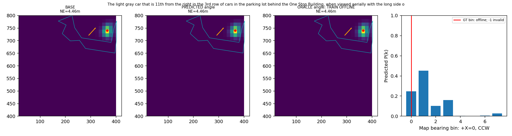
The gray car that is 10th from the right in the 6th row of cars in the large parking lot behind the One Stop Building, when viewed aerially with the long side of the One Stop Building to the right.
The gray car that is 1st from the left in the front row of cars in the brown parking lot off of Wellington Road, in front of a gray and white building.
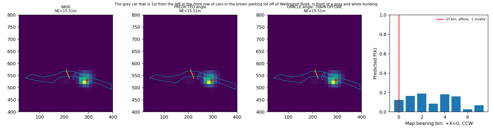
On the north side of Thornbury Road , this brown roofed building is north and to the right of a tree.
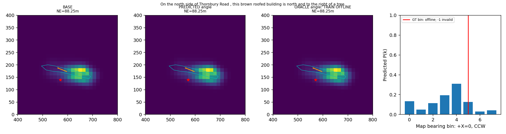
The gray building on Penhurst Avenue with two white cars parked on the street in front of it.
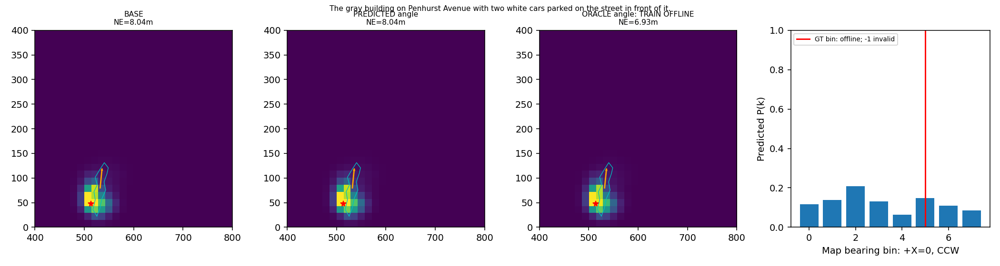
The left side of a multi-colored gray and beige house with a multicolored Brown and gray roof, with one black car and one white car parked in it's driveway, that has an orange truck without a cargo bed in front of it off the Broadway Road
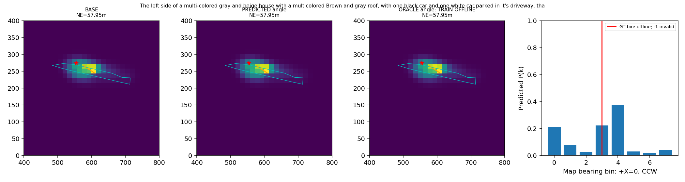
The dark blue car parked in front of the gray house on Bragg Road that is 17 houses to the right of the large gray building at the intersection with Birchfield Road.
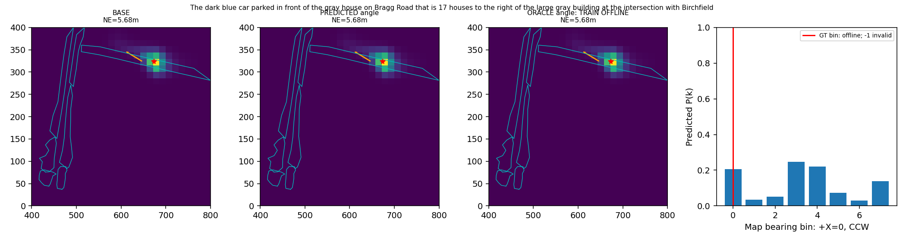
The black car parked in front of the brown house on The Broadway that is 17 houses to the right of the gray building at the intersection with Birchfield Road.
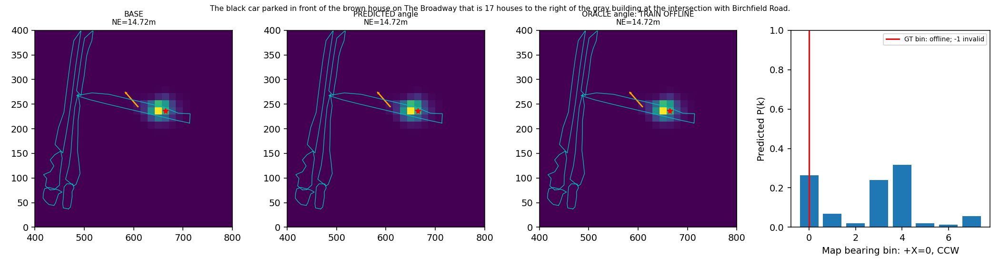
A town house with a grey roof along Aston Lane. There are two cars parked in the house's driveway - a dark grey car and a white car.
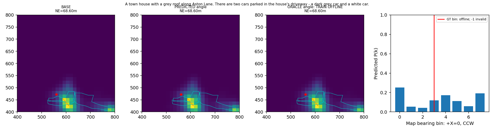
A white car parked next to a blue container with a gray top off Aston Lane
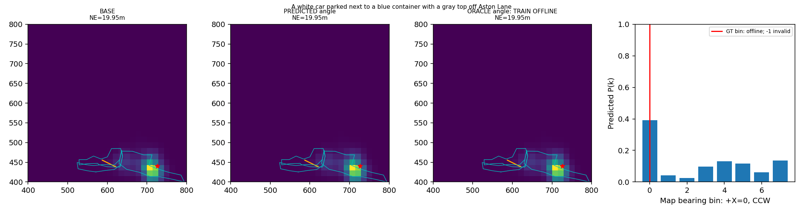
A white car parked in between a red car and another white car in a parking lot at the corner of Birchfield Road and Wellington Road. This car is parked in the middle section, in the row furthest from the building. It is 5 spots from the end of the row nearest to Birchfield Road.
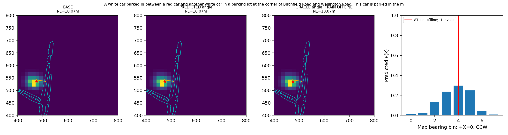
The white car in the massive parking lot behind the gray houses on Aston Lane.
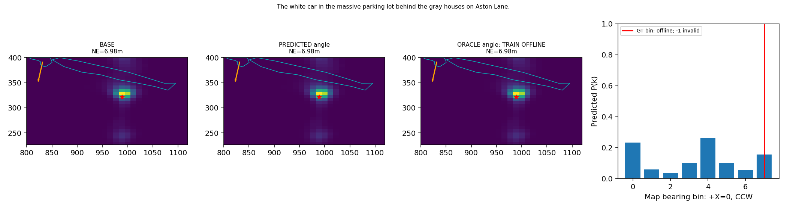
The black car that is 8th from the right in the row of cars in the gray parking lot in front of the gray building at the corner of Holford Drive and Aldridge Road.
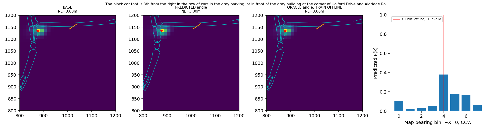
This is a black car parked in the parking space near Perry Barr. There is one empty spot on its left. Over this empty spot, there is another black car.
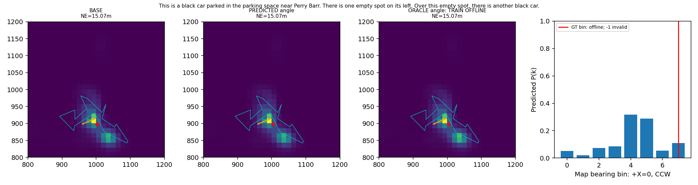
A small multi-colored brick red and white building with a great roof that is beside a blue building with a gray roof off the coppice Road
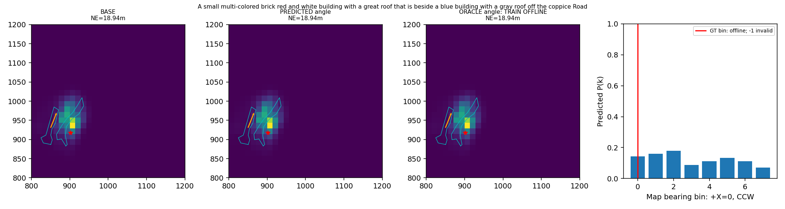
This is a patch of grassy ground with no visible trees on it. It is adjacent to the very short paved area connecting the two uni-directional roads that together form Aldridge Road. The paved area is like the horizontal bar in the letter 'H', and the two halves of Aldridge Road are like the vertical bars.
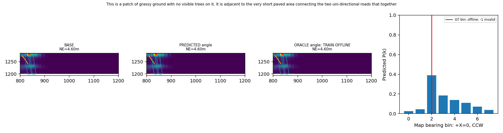
The white car that is third from the left in the row of cars in front of the West Midlands Police Custody Suite. It is between a black car and white car.
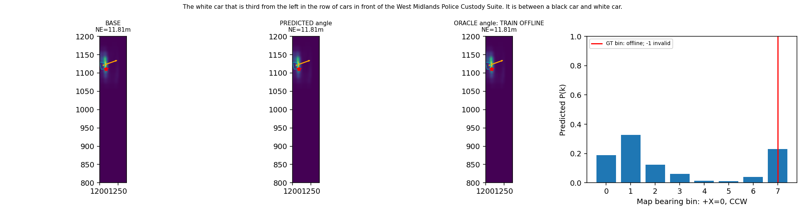
The parking lot across the thick row of trees from the Timet building.
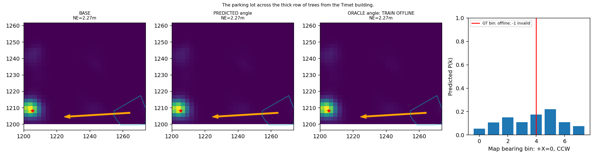